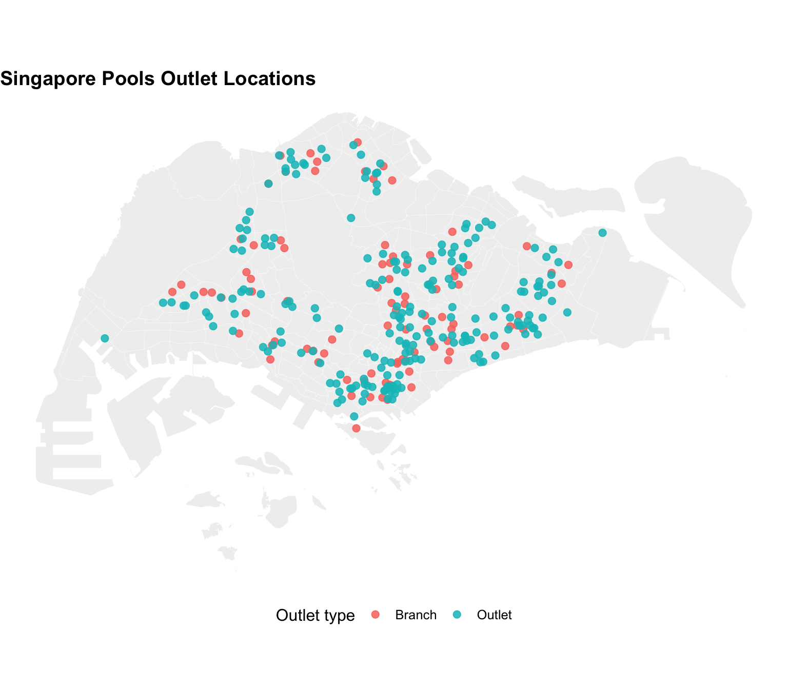
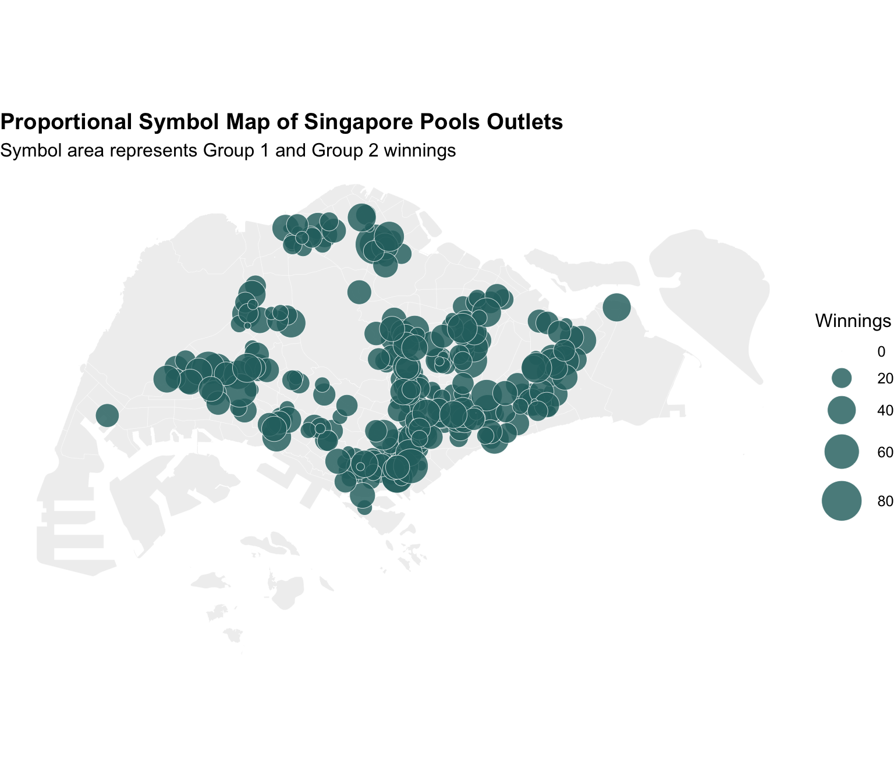
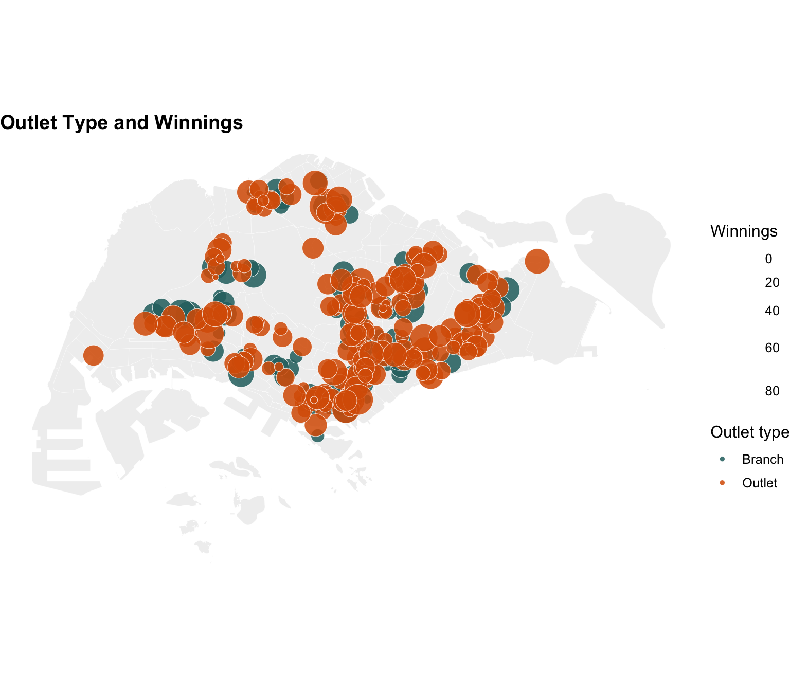
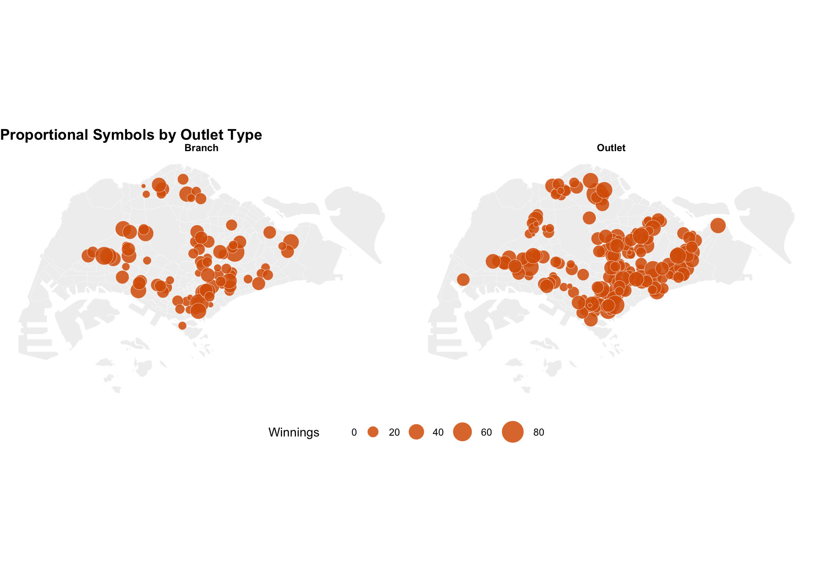
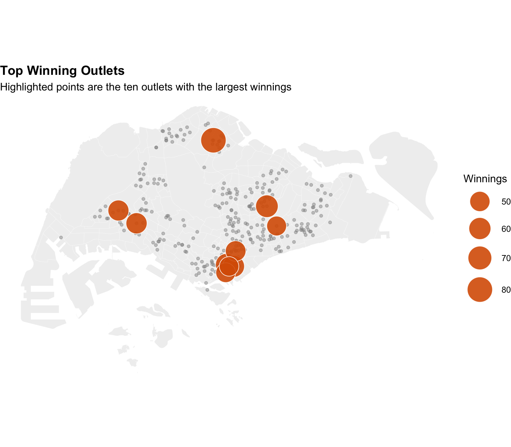

if (!requireNamespace("pacman", quietly = TRUE)) {
install.packages("pacman", repos = "https://cloud.r-project.org")
}
pacman::p_load(
tidyverse,
sf,
scales,
knitr
)Hands-on_Ex09b
1 Visualising Geospatial Point Data
1.1 Overview
Point maps are used when each observation has a coordinate pair. Unlike choropleth maps, the unit of analysis is a location rather than an area. Symbol size, colour and shape can then be used to encode additional attributes.
In this hands-on exercise, Singapore Pools outlet data is converted from an aspatial table into an sf point layer. The points are mapped over Singapore subzones and then redesigned as proportional symbol maps.
By the end of this exercise, we should be able to:
- import point data with projected coordinates;
- convert a data frame into an
sfpoint object; - draw point symbol maps;
- draw proportional symbol maps;
- compare point patterns by outlet type;
- use a base polygon layer to provide geographic context.
1.2 Installing and launching R packages
1.3 Geospatial Data Wrangling
1.3.1 The data
The point data file is SGPools_svy21.csv. It includes outlet names, addresses, coordinates, outlet type and the Gp1Gp2 Winnings field used for proportional symbols.
A Singapore subzone shapefile is also included in this exercise folder so the points can be mapped on a recognisable base map.
pools_path <- "data/aspatial/SGPools_svy21.csv"
sg_path <- "data/geospatial/MP14_SUBZONE_WEB_PL.shp"
if (!file.exists(pools_path) || !file.exists(sg_path)) {
stop("The Singapore Pools CSV or Singapore subzone shapefile is missing.")
}
sg_map <- st_read(sg_path, quiet = TRUE) %>%
st_make_valid()
sgpools <- read_csv(pools_path, show_col_types = FALSE)
glimpse(sgpools)Rows: 306
Columns: 7
$ NAME <chr> "Livewire (Marina Bay Sands)", "Livewire (Resorts Wo…
$ ADDRESS <chr> "2 Bayfront Avenue, #01-01 The Shoppes at Marina Bay…
$ POSTCODE <dbl> 18972, 98138, 738078, 188306, 552542, 731001, 370064…
$ XCOORD <dbl> 30841.56, 26703.87, 20117.93, 29776.95, 32238.69, 21…
$ YCOORD <dbl> 29598.56, 26525.70, 44888.06, 31382.18, 39518.76, 46…
$ `OUTLET TYPE` <chr> "Branch", "Branch", "Branch", "Branch", "Branch", "B…
$ `Gp1Gp2 Winnings` <dbl> 5, 11, 0, 44, 0, 3, 17, 16, 21, 25, 22, 25, 31, 27, …1.3.2 Creating a sf data frame from an aspatial data frame
The coordinates are stored in Singapore SVY21 projected coordinates. The point layer is created using the same CRS as the subzone map to avoid misalignment.
sgpools_sf <- st_as_sf(
sgpools,
coords = c("XCOORD", "YCOORD"),
crs = st_crs(sg_map),
remove = FALSE
) %>%
mutate(
winnings = `Gp1Gp2 Winnings`,
outlet_type = `OUTLET TYPE`
)sgpools_sf %>%
st_drop_geometry() %>%
select(NAME, outlet_type, winnings, XCOORD, YCOORD) %>%
head(10) %>%
knitr::kable(format = "html")| NAME | outlet_type | winnings | XCOORD | YCOORD |
|---|---|---|---|---|
| Livewire (Marina Bay Sands) | Branch | 5 | 30841.56 | 29598.56 |
| Livewire (Resorts World Sentosa) | Branch | 11 | 26703.87 | 26525.70 |
| SportsBuzz (Kranji) | Branch | 0 | 20117.93 | 44888.06 |
| SportsBuzz (PoMo) | Branch | 44 | 29776.95 | 31382.18 |
| Prime Serangoon North | Branch | 0 | 32238.69 | 39518.76 |
| Singapore Pools Woodlands Centre | Branch | 3 | 21012.15 | 46987.32 |
| Singapore Pools 64 Circuit Rd Branch | Branch | 17 | 33990.39 | 34355.53 |
| Singapore Pools 88 Circuit Rd Branch | Branch | 16 | 33847.38 | 33976.04 |
| Singapore Pools Anchorvale Rd Branch | Branch | 21 | 33909.93 | 41274.52 |
| Singapore Pools Ang Mo Kio N2 Branch | Branch | 25 | 29246.06 | 38942.60 |
1.4 Drawing Proportional Symbol Map
1.4.1 It all started with an interactive point symbol map
The first map uses equal-sized points. It is useful for checking whether the points are placed correctly.
ggplot() +
geom_sf(data = sg_map, fill = "grey94", colour = "white", linewidth = 0.08) +
geom_sf(data = sgpools_sf, aes(colour = outlet_type), size = 2.2, alpha = 0.85) +
coord_sf() +
labs(
title = "Singapore Pools Outlet Locations",
colour = "Outlet type"
) +
theme_void(base_size = 12) +
theme(
plot.title = element_text(face = "bold"),
legend.position = "bottom"
)
ggplot() +
geom_sf(data = sg_map, fill = "grey94", colour = "white", linewidth = 0.08) +
geom_sf(data = sgpools_sf, aes(colour = outlet_type), size = 2.2, alpha = 0.85) +
coord_sf() +
labs(
title = "Singapore Pools Outlet Locations",
colour = "Outlet type"
) +
theme_void(base_size = 12)1.4.2 Lets make it proportional
The next map uses point size to represent Gp1Gp2 Winnings. This is more informative because it shows both location and magnitude.
ggplot() +
geom_sf(data = sg_map, fill = "grey94", colour = "white", linewidth = 0.08) +
geom_sf(
data = sgpools_sf,
aes(size = winnings),
shape = 21,
fill = "#2A6F6F",
colour = "white",
alpha = 0.82,
stroke = 0.25
) +
scale_size_area(max_size = 12, labels = comma) +
labs(
title = "Proportional Symbol Map of Singapore Pools Outlets",
subtitle = "Symbol area represents Group 1 and Group 2 winnings",
size = "Winnings"
) +
theme_void(base_size = 12) +
theme(
plot.title = element_text(face = "bold"),
legend.position = "right"
)
1.4.3 Lets give it a different colour
Colour can be used together with size to represent outlet type and winnings at the same time.
ggplot() +
geom_sf(data = sg_map, fill = "grey94", colour = "white", linewidth = 0.08) +
geom_sf(
data = sgpools_sf,
aes(size = winnings, fill = outlet_type),
shape = 21,
colour = "white",
alpha = 0.86,
stroke = 0.25
) +
scale_size_area(max_size = 12, labels = comma) +
scale_fill_manual(values = c("#2A6F6F", "#D95F02", "#F2A65A", "#7570B3")) +
labs(
title = "Outlet Type and Winnings",
size = "Winnings",
fill = "Outlet type"
) +
theme_void(base_size = 12) +
theme(
plot.title = element_text(face = "bold"),
legend.position = "right"
)
1.4.4 I have a twin brother
Faceting gives each outlet type its own panel. This reduces overlap and makes the spatial pattern of each group easier to inspect.
ggplot() +
geom_sf(data = sg_map, fill = "grey94", colour = "white", linewidth = 0.08) +
geom_sf(
data = sgpools_sf,
aes(size = winnings),
shape = 21,
fill = "#D95F02",
colour = "white",
alpha = 0.85,
stroke = 0.2
) +
facet_wrap(~outlet_type) +
scale_size_area(max_size = 9, labels = comma) +
labs(
title = "Proportional Symbols by Outlet Type",
size = "Winnings"
) +
theme_void(base_size = 11) +
theme(
plot.title = element_text(face = "bold"),
strip.text = element_text(face = "bold"),
legend.position = "bottom"
)
1.5 My Extension: Highest winning outlets
The table below identifies the outlets with the largest recorded winnings. This provides a readable supplement to the proportional symbol map, where large circles can overlap.
sgpools_sf %>%
st_drop_geometry() %>%
arrange(desc(winnings)) %>%
select(NAME, ADDRESS, outlet_type, winnings) %>%
head(10) %>%
mutate(winnings = comma(winnings)) %>%
knitr::kable(format = "html")| NAME | ADDRESS | outlet_type | winnings |
|---|---|---|---|
| 7-Eleven Yishun | Blk 102 Yishun Ave 5 #01-137 Singapore 760102 | Outlet | 80 |
| Singapore Pools Hougang N1 Branch | Blk 106 Hougang Ave 1 #01-1209/1211 Singapore 530106 | Branch | 63 |
| Singapore Pools People's Park Centre | 101 Upp Cross St, People's Park Centre, #01-12 Singapore 058357 | Branch | 60 |
| Tay Sui Lan Agency | 11 Collyer Quay The Arcade #02-13 Singapore 049317 | Outlet | 59 |
| NTUC FP Jurong East | Blk 135 Jurong East St 13 #01-337 Singapore 600135 | Outlet | 55 |
| Singapore Pools Jurong West N5 Branch | Blk 508 Jurong West St 52 #01-166 Singapore 640508 | Branch | 54 |
| Delisia Agency Pte Ltd | 149 Rochor Rd Fu Lu Shou Complex #B1-26 Singapore 188425 | Outlet | 52 |
| Ng Teo Guan Self Service | Blk 301 Ubi Ave 1 #01-251 Singapore 400301 | Outlet | 48 |
| NTUC FP Tanjong Pagar | Blk 5 Tanjong Pagar Rd Tanjong Pagar Plaza #01-01 Singapore 081005 | Outlet | 48 |
| Kis Store | 18 Cross Street Marsh & McLennan Centre #B1-01 Singapore 048423 | Outlet | 47 |
top_outlets <- sgpools_sf %>%
slice_max(winnings, n = 10, with_ties = FALSE)
ggplot() +
geom_sf(data = sg_map, fill = "grey94", colour = "white", linewidth = 0.08) +
geom_sf(data = sgpools_sf, colour = "grey55", size = 1.3, alpha = 0.45) +
geom_sf(
data = top_outlets,
aes(size = winnings),
shape = 21,
fill = "#D95F02",
colour = "white",
alpha = 0.9
) +
scale_size_area(max_size = 13, labels = comma) +
labs(
title = "Top Winning Outlets",
subtitle = "Highlighted points are the ten outlets with the largest winnings",
size = "Winnings"
) +
theme_void(base_size = 12) +
theme(
plot.title = element_text(face = "bold"),
legend.position = "right"
)
1.6 Key Takeaways
- Point maps require correctly assigned coordinate reference systems.
- Equal-sized point maps are good for checking location, while proportional symbols add magnitude.
- Symbol size and colour should not compete; each should encode a clear variable.
- A summary table is helpful when overlapping circles make exact comparison difficult.
1.7 References
- R4VA chapter: https://r4va.netlify.app/chap22